Google Trends - Ethiopia Economic Monitor#
The Google trends analysis presetnted here is to support analytical activities to monitor impacts of economic reforms rolled out in 2024.
The cornerstone of these economic reforms was the introduction of FX market liberalization at the end of July 2024 which led to a substantial devaluation of the Ethiopian Birr. While these measures are expected to boost productive capacity of households in the medium to long term, prices, employment, and incomes may be hit in the short-term transition period.
To better understand the impact on population, we’ve gathered data from Google’s searches to see how the interest in particular search terms have been changing over time.
Google Trends provides access to a largely unfiltered sample of actual search requests made to Google. It’s anonymized (no one is personally identified), categorized (determining the topic for a search query) and aggregated (grouped together). This allows us to display interest in a particular topic from around the globe or down to city-level geography.
For the purpose of this analysis, we’ve broken down search terms into six major categories. These categories broadly caputre people’s interest over time and provides high level insights into their behavior. These categories include:
Exchange Rate
Devaluation
Prices
Natural Disasters
Conflicts
Other relevant terms
These terms have been collected from Google’s related terms and topics search, as well as brainstorming with the team.
Topic based search#
This section uses the data gatehred from Google’s API and creates charts to see the trends for each of the search terms. In cases where its relevant, the benchmarking lines are shown for when FX market liberalization was annnounced and when Somaliland agreed to lease land to Ethiopia to build a naval facility.
For the topics Exchange rate, Devaluation and Prices - we can see sharp increase in the search for July 28th 2024, which was the date when market liberalization news first came out. People were inersted in knowing the more about devaluation and what it meant for the ecnonomy. Search terms like Ethiopian birr, Awash bank exchange rate, National bank exchange rate all started trending.
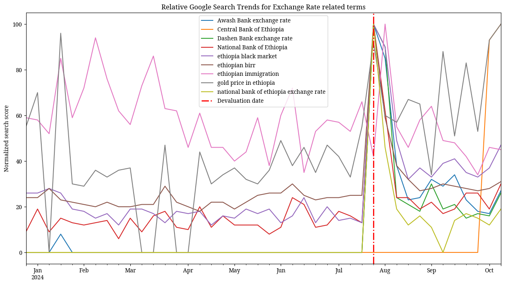
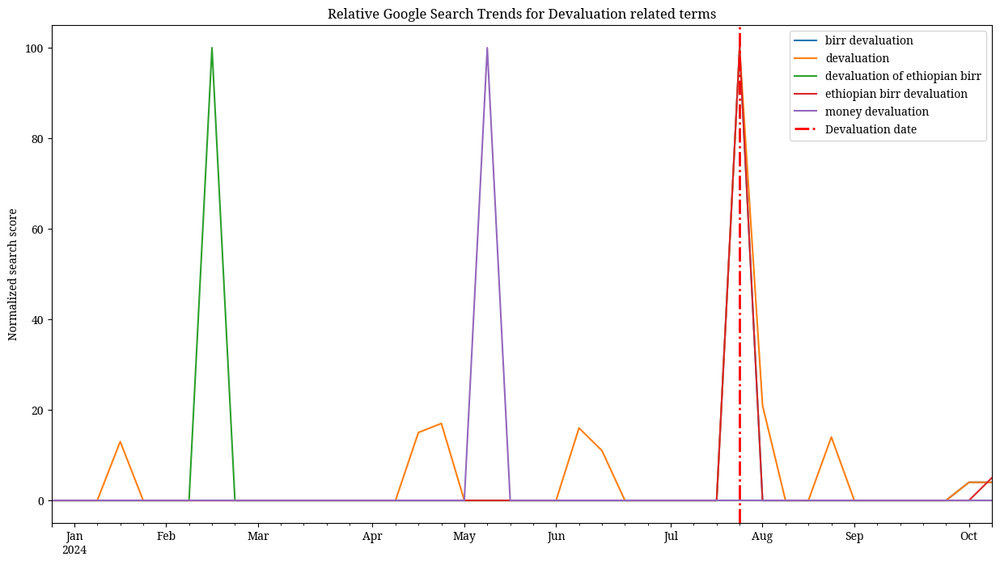
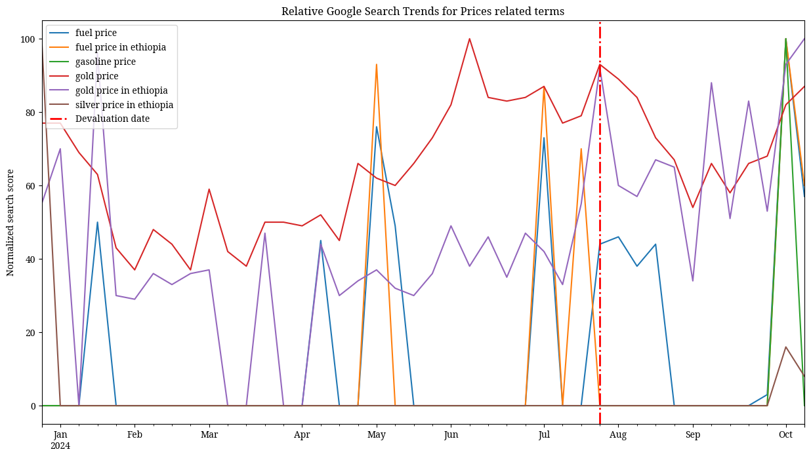
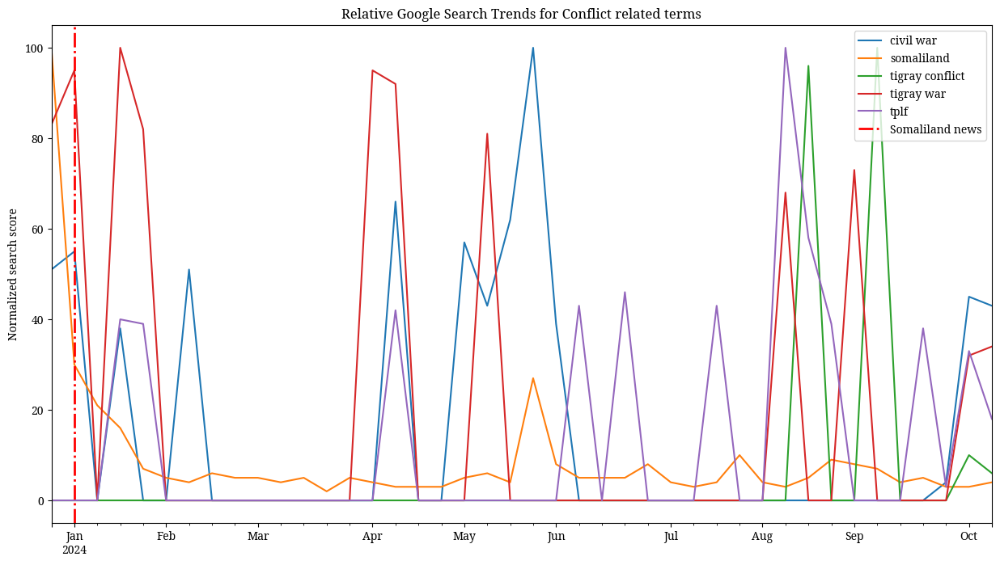
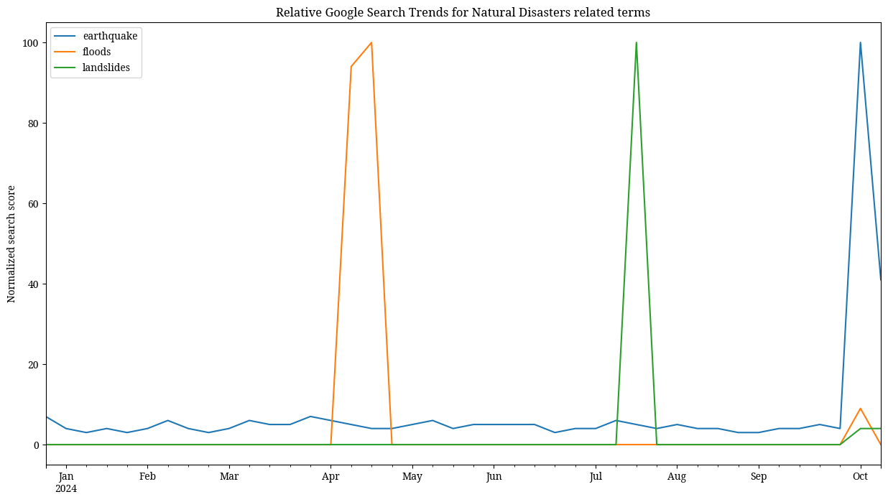
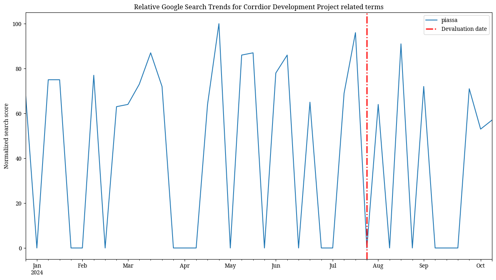
Word association#
To show the search terms are linked to a Topic and to each other, we created a network chart to better understand the association between search terms and their topics.
No of unique characters: 41
No of connections: 36
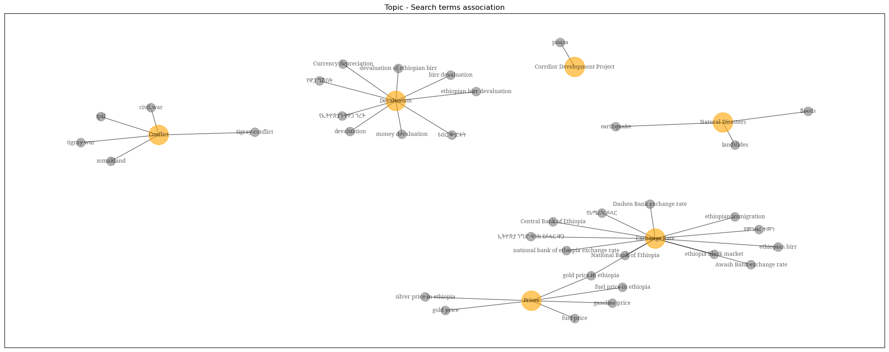
The team was also interested in knowing what was the global impact of Birr devaluation and the ongoing conflicts in the country. For this, we picked some search terms specific to Ethiopia and searched for them in other countries that have substantial Ethiopian presence i.e. United States, United Arab Emirates and South Africa. Unsurpisingly, there were sharp ticks in these search terms around the date of market liberalization announcement.
Trends from other countries#
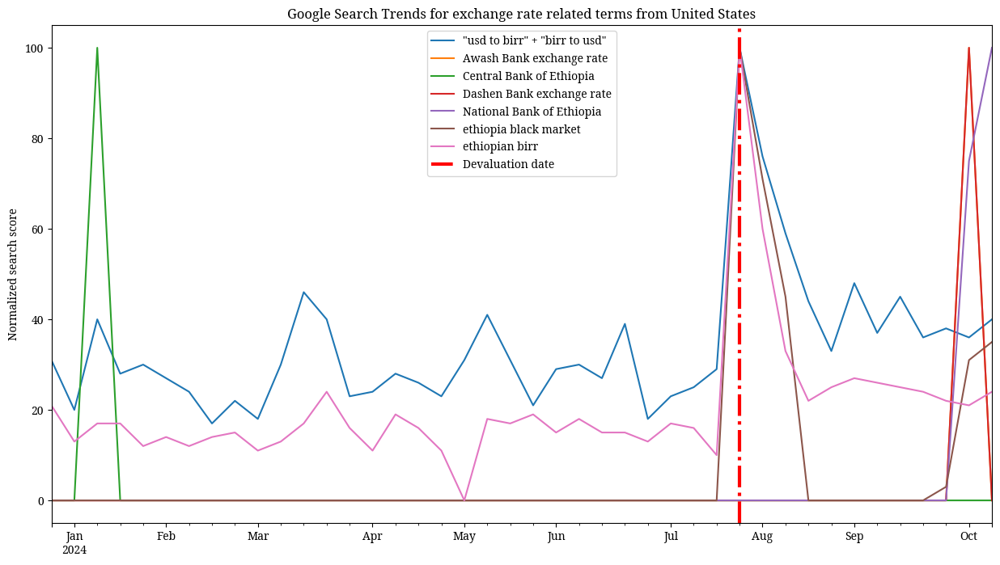
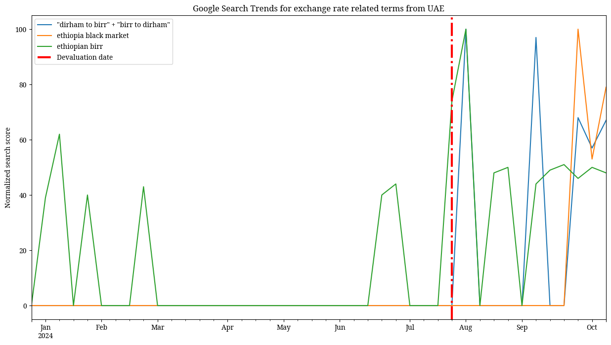
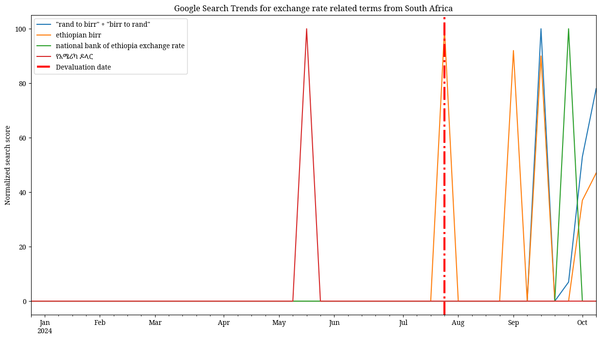
Word association for country data#
No of unique characters: 19
No of connections: 38
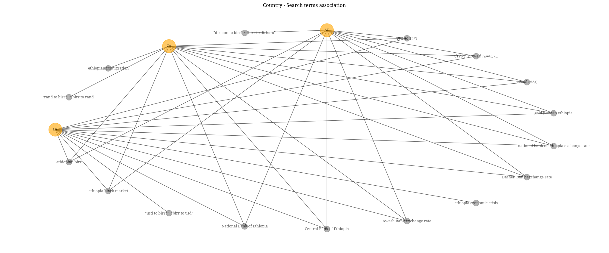
Subanational Coverage#
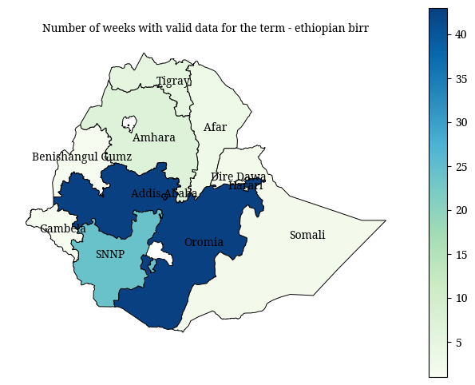
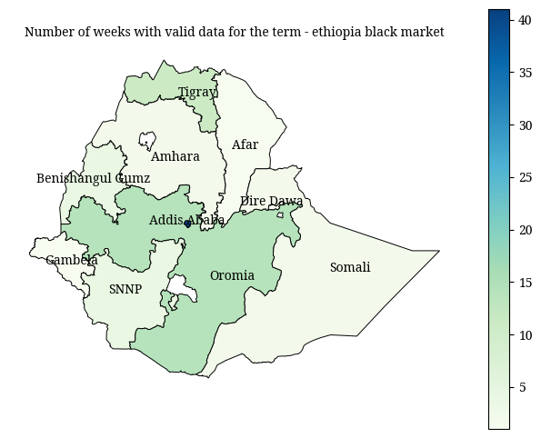
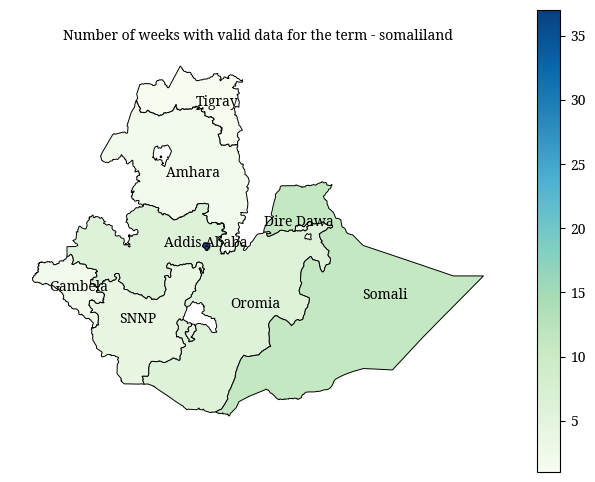
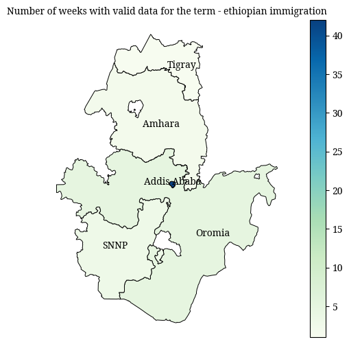